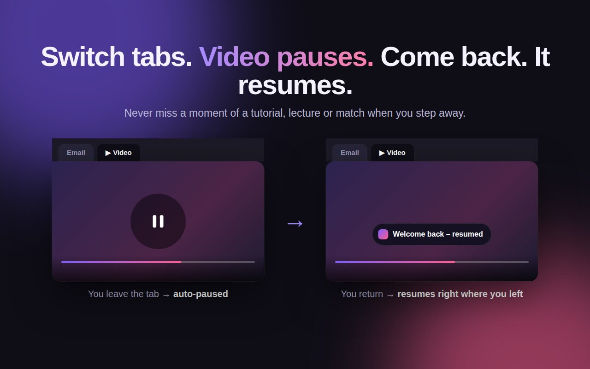
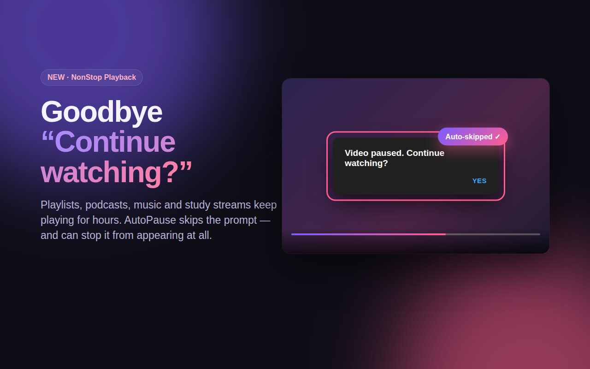
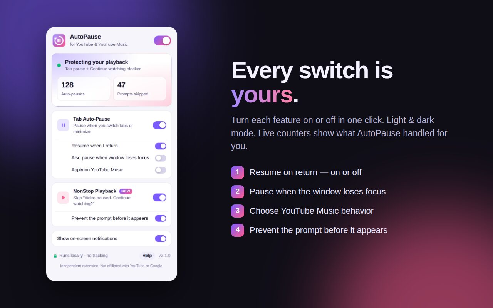
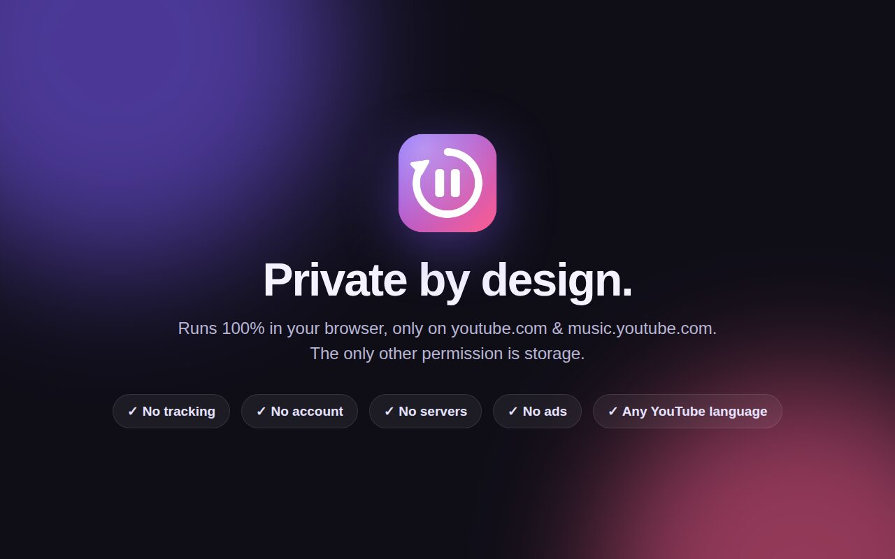

AutoPause for YouTube: pause on tab switch, skip “Continue watching?”
AutoPause pauses YouTube when you switch tabs, resumes when you come back, and skips the "Video paused. Continue watching?" prompt. It does both in one lightweight extension, and it works on YouTube Music too.
Two YouTube fixes. One tiny extension.
Built for lectures, tutorials, playlists, podcasts and long study sessions.
Tab Auto-Pause
Switch tabs or minimize and the video pauses. Come back and it picks up exactly where you left off. It only ever resumes what it paused.
NonStop Playback
Automatically skips "Continue watching?" on YouTube and "Still listening?" on YouTube Music, in any interface language.
Private by design
Runs only on youtube.com and music.youtube.com. The only other permission is storage. No account, tracking, ads or servers.
See it in 30 seconds
Switch tabs and the video pauses. Stay for hours and the prompt never interrupts you.
Screenshots
Your manual pauses are always respected.




Frequently asked questions
Quick answers about AutoPause for YouTube.
How do I stop YouTube from asking "Continue watching?"
Install AutoPause and keep NonStop Playback on. It skips the prompt automatically, and with "Prevent the prompt before it appears" on, it usually never shows. Read the full guide.
How do I make YouTube pause when I switch tabs?
Tab Auto-Pause pauses the video as soon as you leave the tab or minimize Chrome, and resumes it when you return. You can turn auto-resume off, or also pause when the window loses focus.
Is AutoPause a YouTube NonStop alternative?
Yes. AutoPause includes NonStop-style auto-continue, and also pauses YouTube when you switch tabs and resumes when you return, all in one extension.
Does it stop "Are you still watching?" during playlists and study streams?
Yes. It skips the prompt so long playlists, lectures, podcasts and lo-fi streams keep playing.
Will it un-pause a video I paused myself?
Never. AutoPause only resumes videos that it paused. A pause from the button, the spacebar or the K key stays paused.
Does it work on YouTube Music and in other languages?
Yes. The "Still listening?" blocker works on YouTube Music, and prompt detection works whatever language your YouTube is set to. Tab auto-pause for Music is an optional switch that's off by default, so background music keeps playing.
What permissions does it use? Does it collect my data?
It runs only on youtube.com and music.youtube.com, and its only other permission is storage, to remember your settings. It collects no data. Read the privacy policy.
Which browsers are supported?
Google Chrome 111 or newer, plus Microsoft Edge and Brave, which install from the Chrome Web Store.
Changelog
What's new in each version.
- v2.1.0
- New name: AutoPause for YouTube
- The prompt blocker now works in any YouTube language
- Store listing translated into 11 languages
- Clearer permission wording
- v2.0.0
- New NonStop Playback: skips "Continue watching?" and "Still listening?"
- Redesigned popup with light and dark mode and live counters
- YouTube Music support, pause on window blur, Picture-in-Picture awareness
- v1.1.0
- First release: pause YouTube when the tab becomes inactive, and resume on return